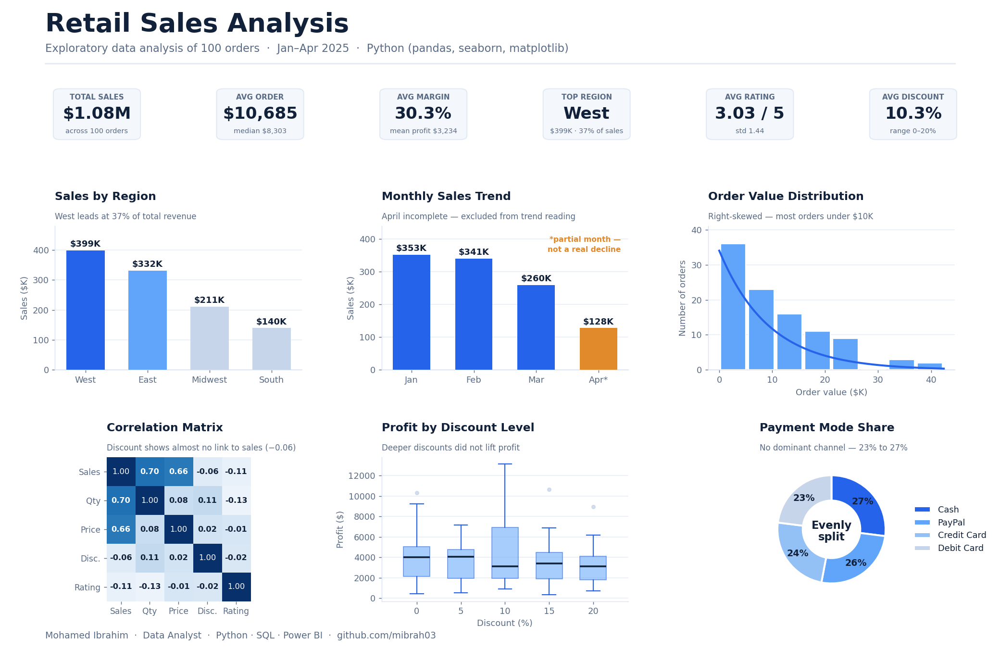

Retail order analysis in Python
One hundred orders, twelve fields. Cleaned and profiled the data, then worked through distribution, correlation, regional split and payment mix. Discounting had almost no relationship to sales (r = −0.06).
What the count caught
Monthly revenue appeared to fall off a cliff in April. The dataset simply ended on 10 April — ten days against thirty-one.